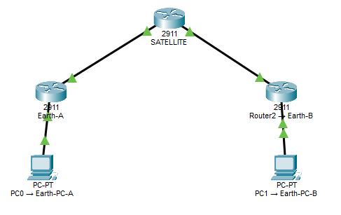

Networking · Cisco Packet Tracer · September 2026
Building a Satellite Network in Packet Tracer
As part of my networking study, I built a small network in Cisco Packet Tracer designed to represent communication between two Earth-based networks through a satellite. The exercise gave me an opportunity to practise IPv4 addressing, router interfaces, static routes and network troubleshooting.
Building the network
The network consists of two separate Earth networks with a router representing a satellite between them. Each Earth network has a PC and a router, while the satellite has connections to both sides.
The basic topology looks like this:
PC0
|
|
Router0
|
|
Satellite
|
|
Router2
|
|
PC1
The two Earth networks use separate private IPv4 networks:
192.168.1.0/24 and
192.168.2.0/24.
The links between the routers use two smaller
/30 networks. These provide two usable addresses
for each point-to-point connection.

Configuring the PCs
I configured PC0 with the following IPv4 settings:
IPv4 Address: 192.168.1.10
Subnet Mask: 255.255.255.0
Default Gateway: 192.168.1.1PC1 uses the corresponding configuration on the second network:
IPv4 Address: 192.168.2.10
Subnet Mask: 255.255.255.0
Default Gateway: 192.168.2.1
The default gateway is important because it tells the PC
where to send traffic destined for another network. For
example, PC0 cannot directly reach
192.168.2.10, because that address belongs to a
different subnet. It therefore sends the traffic to
Router0 at 192.168.1.1.
Configuring the router links
The router-to-router connections use separate
/30 networks.
The first connection is:
Router0: 10.0.0.1
Satellite: 10.0.0.2
Network: 10.0.0.0/30The second connection is:
Satellite: 10.0.0.5
Router2: 10.0.0.6
Network: 10.0.0.4/30
After configuring the interfaces, I used
show ip interface brief to check their status.
The important result was that the interfaces were
up/up.
I also used ping to test the individual
connections before trying to communicate between the PCs.
For example, Router2 was able to successfully ping
10.0.0.5.
Adding static routes
The routers know about their directly connected networks, but that isn't enough to reach the network on the other side of the satellite. I therefore added static routes.
On Router0, I added:
ip route 192.168.2.0 255.255.255.0 10.0.0.2
This tells Router0 that traffic for the
192.168.2.0/24 network should be sent to the
satellite at 10.0.0.2.
On the satellite, I added routes for both Earth networks:
ip route 192.168.1.0 255.255.255.0 10.0.0.1
ip route 192.168.2.0 255.255.255.0 10.0.0.6Finally, Router2 was configured with:
ip route 192.168.1.0 255.255.255.0 10.0.0.5
I then used show ip route to check that the
static routes had been installed correctly.
Understanding the route
Once the routing was configured, a packet travelling from PC0 to PC1 could follow this path:
PC0
192.168.1.10
↓
Router0
192.168.1.1
↓
10.0.0.1
↓
Satellite
10.0.0.2
↓
10.0.0.5
↓
Router2
10.0.0.6
↓
192.168.2.1
↓
PC1
192.168.2.10This is a useful way of thinking about routing. The PCs do not need to know the entire path between them. They send traffic to their default gateway, and the routers use their routing tables to determine where the packet should go next.
Troubleshooting the connection
The first attempt to ping PC1 from PC0 failed with 100% packet loss.
Pinging 192.168.2.10 with 32 bytes of data:
Request timed out.
Request timed out.
Request timed out.
Request timed out.
Packets: Sent = 4, Received = 0, Lost = 4 (100% loss)Rather than immediately changing the router configuration, I started testing the network one hop at a time.
PC0 could successfully ping its own router:
ping 192.168.1.1It could also reach Router0's satellite-facing interface:
ping 10.0.0.1And it could reach the satellite:
ping 10.0.0.2I then tested Router2's LAN interface:
ping 192.168.2.1This also worked. That was an important clue because it showed that the routing between the two routers was actually working.
Finding the actual problem
The problem turned out not to be the routers at all. PC1 had never actually been configured with its IPv4 address.
Its configuration showed:
IPv4 Address: 0.0.0.0
Subnet Mask: 0.0.0.0
Default Gateway: 0.0.0.0Once I configured PC1 with the correct settings:
IPv4 Address: 192.168.2.10
Subnet Mask: 255.255.255.0
Default Gateway: 192.168.2.1the connection worked.
This was probably the most useful part of the exercise for me. The routing configuration looked complicated enough that it would have been easy to assume the problem was somewhere in the routers. Testing each section separately showed that the routers were already doing their jobs correctly.
Testing the complete network
After configuring PC1, I tested the connection in both directions.
PC1 was able to ping PC0:
Pinging 192.168.1.10 with 32 bytes of data:
Reply from 192.168.1.10: bytes=32 time<1ms TTL=125
Reply from 192.168.1.10: bytes=32 time=10ms TTL=125
Reply from 192.168.1.10: bytes=32 time=11ms TTL=125
Reply from 192.168.1.10: bytes=32 time=12ms TTL=125
Packets: Sent = 4, Received = 4, Lost = 0 (0% loss)This confirmed that the two separate IP networks could communicate successfully through the intermediate routers.
What the satellite represents
Although I called the middle router a satellite, Packet Tracer is not simulating an actual radio signal travelling through space. The device is functioning as a simplified representation of the networking role that a satellite could play.
In a real satellite communication system, there would be additional physical processes such as an uplink from an Earth station, transmission through the satellite and a downlink to another Earth station.
This simulation abstracts those physical details away and focuses on the networking concepts. The important idea is that the intermediate device can receive traffic from one network and forward it towards another network.
Understanding TTL
One small detail I noticed while testing was the TTL value in the ping responses.
When PC1 pinged itself, the response had a TTL of 128:
Reply from 192.168.2.10: bytes=32 time=8ms TTL=128When PC1 pinged PC0, the returned packets had a TTL of 125:
Reply from 192.168.1.10: bytes=32 time<1ms TTL=125TTL, or Time To Live, is reduced as an IP packet passes through routers. The difference provided a useful reminder that the packet was travelling through multiple Layer 3 hops rather than communicating directly between the two PCs.
What I learned from the exercise
The biggest lesson was that configuring a network is only part of the job. Being able to troubleshoot it systematically is just as important.
When the first end-to-end ping failed, I initially had to consider several possible causes: incorrect IP addressing, an incorrect gateway, a router interface being down, a missing route or a problem with the end device.
Testing each hop separately allowed me to narrow the problem down instead of changing configurations without knowing what was wrong.
What I'm taking away from this
- IPv4 addressing: devices need an address, subnet mask and appropriate default gateway to communicate across networks.
- Default gateways: PCs send traffic for other networks to their local router.
- Static routes: routers can be explicitly told which next hop to use for a particular network.
-
Routing tables:
show ip routecan be used to check how a router knows where to send traffic. - Ping: testing individual interfaces makes it possible to identify where connectivity is failing.
- Troubleshooting: testing one hop at a time is much more useful than immediately changing configuration.
- Packet Tracer: it provides a useful way to experiment with networking concepts without needing physical networking equipment.
This was a relatively small network, but it gave me a much better understanding of what routers are actually doing with IP traffic. I'm finding that working through these examples myself and troubleshooting the mistakes is helping the concepts stick much more effectively than simply reading about them.
← Back to Learning & Development